日中の時間を安全に過ごし、体操や活動を通して生活リズムを整えます。
送迎・食事・入浴（任意）にも対応いたします。
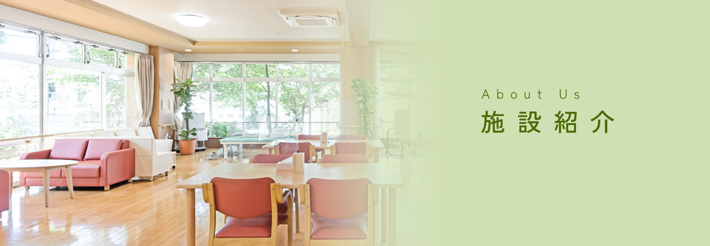

ひだまりケア旭川
通所介護・訪問介護・居宅介護支援事業所
北海道旭川市 旭町2条7丁目 12-77
Tel 0166-xx-yyyy
日中の時間を安全に過ごし、体操や活動を通して生活リズムを整えます。
送迎・食事・入浴（任意）にも対応いたします。

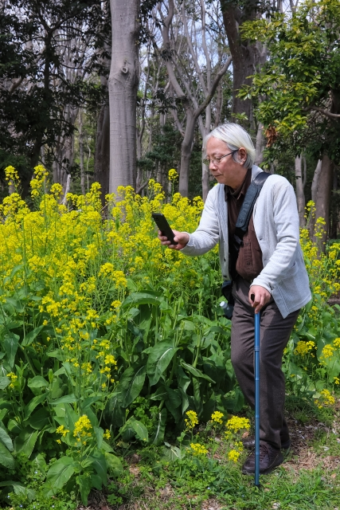
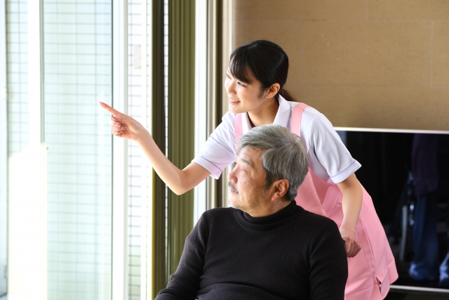

ご自宅での生活を続けられるよう、身体介護・生活援助をいたします。
必要な範囲でご利用者の無理なく支援いたします。
「自分らしく生活したい」というお気持ちに寄り添い、 お一人おひとりのペースに合わせた介助を行います。 お家族様の介護負担も軽減し、皆さまに笑顔をお届けします。
●主なサービス内容
「今まで通り」の快適な住環境を保てるよう、 日常のちょっとしたお困りごとをお手伝いします。 なじみのあるご自宅での生活を裏方として支えます。
●主なサービス内容

「何から始めればいいかわからない」という段階でもかまいません。
状況を伺いながら、ご利用の流れを一緒に整理いたします。
「最近物忘れが増えて、介護が必要になった」 「退院した後の自宅での生活が心配」など、 まだ介護保険の申請をしていない状態でもご相談ください。 今のご状況で利用できる制度やサービスを一緒に探します。
●こんなご相談をお受けします
介護をするご家族の心身の健康も大切です。 「仕事と介護を両立できるか」「自分の時間が欲しい」 といったお悩みも遠慮なくいつでもご相談ください。 ご家族様が無理なく続けられる体制づくりをサポートします。
●こんなご相談をお受けします
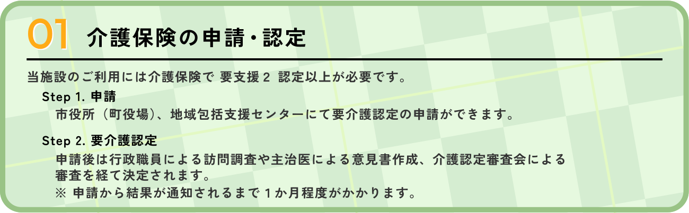
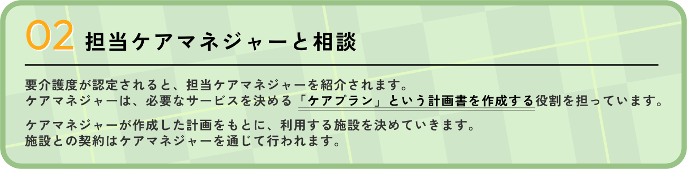
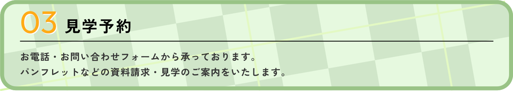
お問い合わせフォーム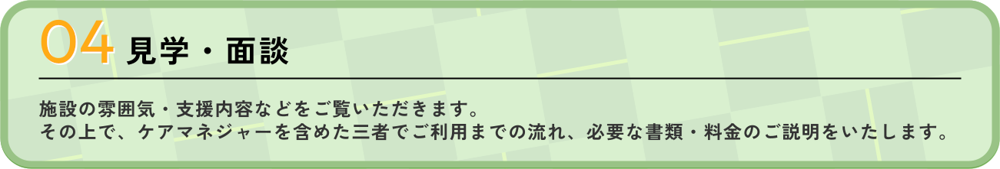
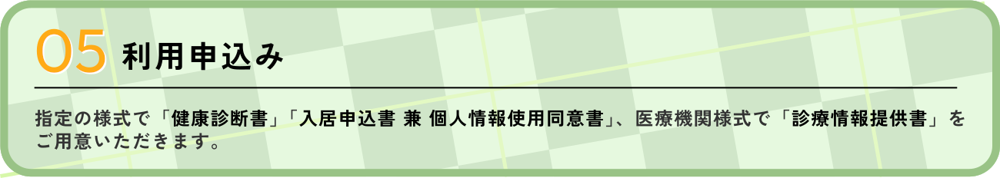
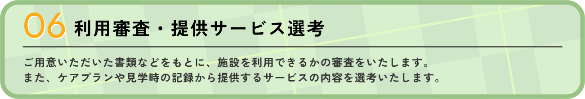
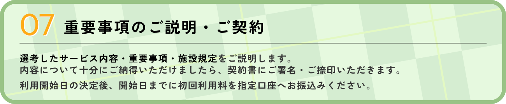
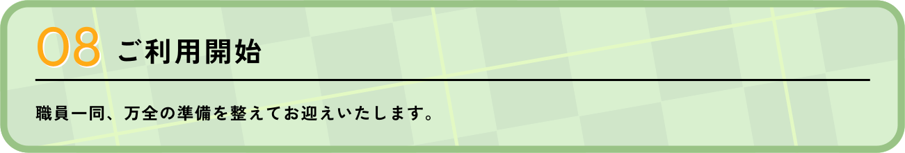